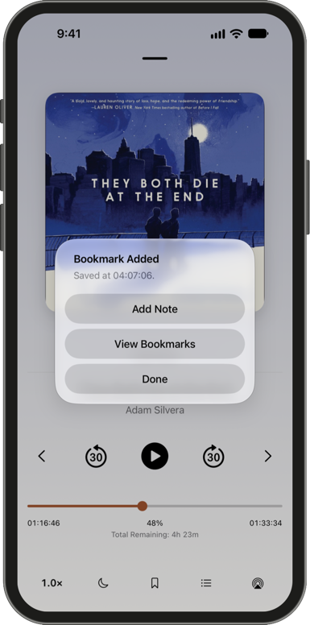
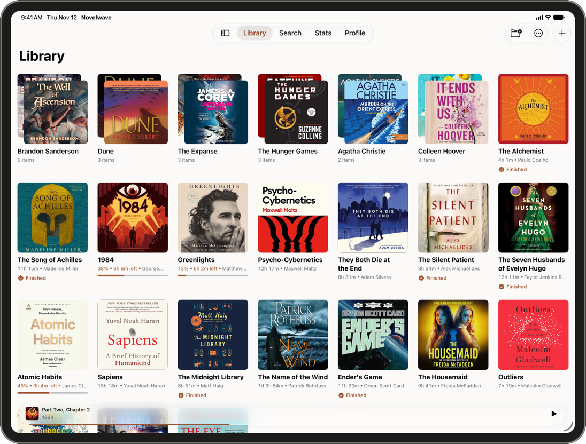
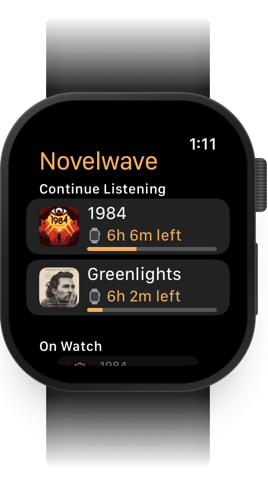

Cum funcționează Adu-ți propriile cărți audio.
-
Procură-ți fișierele
Cărți audio fără DRM din magazine precum Libro.fm și Downpour, CD‑uri pe care le-ai copiat sau clasici din domeniul public de pe LibriVox.
-
Importă-le
Din Fișiere, din iCloud Drive, prin AirDrop sau de pe calculator. O carte în mai multe părți devine una singură.
-
Ascultă oriunde
Locul la care ai rămas, rafturile și marcajele te urmează pe iPad, pe Apple Watch și în mașină prin propriul tău iCloud. Fără cont, fără server.
Redă M4B, M4A, MP3, AAC, FLAC, WAV, AIFF, Ogg Opus și MP4. Fișierele AAX de la Audible merg doar în aplicația Audible.
Player Făcut pentru cărți lungi.
-

Capitole
Sari de la un capitol la altul și vezi cât ai ascultat din fiecare. Lista completă e la o atingere distanță.
-

Viteză
De la 0,5× la 6×, în pași de 0,05, cu timpul rămas la fiecare viteză.
-

Temporizator de somn
De la cinci minute până la finalul capitolului, cu numărătoarea inversă pe ecranul de blocare.
-

Marcaje
Salvează un moment dintr-o atingere, cu o notiță despre motiv.
Plus salturi de la 5 la 45 de secunde, o scurtă derulare înapoi când pui pauză și o redare care continuă după apeluri și alarme.

Bibliotecă Rafturi, ca într-o bibliotecă adevărată.
Rafturi în rafturi. Sanderson, apoi Cosmere, apoi Mistborn. Pune-le unele în altele pe câte niveluri are colecția ta.
Găsește orice carte. Caută după titlu, autor și raft, sau arată doar ce asculți acum.
Apple Watch Lasă telefonul acasă.
Trimite o carte pe Apple Watch înainte de alergare, sau lasă iPhone-ul în buzunar și controlează-l de la încheietură. Cum funcționează pe Apple Watch



CarPlay și Siri Mâinile pe volan.
Continuă de unde ai rămas sau răsfoiește-ți rafturile. Apoi doar cere.
- „Dă înapoi 30 de secunde.”
- „Capitolul următor.”
- „Oprește la finalul acestui capitol.”

Și altele.
-
Scurtături
Acțiuni pentru redare, capitole, viteză, marcaje și temporizatorul de somn.
-
Ecranul de blocare
Temporizatorul numără invers acolo și în Dynamic Island.
-
Widgeturi
Ce rulează pe ecranul principal, și comenzi în centrul de control.
-
Statistici de ascultare
Pe săptămână, lună și an, cu o retrospectivă în fiecare ianuarie.
-
Fiecare detaliu
Titluri, autori și coperți din Poze sau Fișiere, cum vrei tu.
-
Export
Toată biblioteca ta în Fișiere, cu marcaje și notițe cu tot.
-
Spotlight
Găsește o carte din căutarea de pe ecranul principal.
-
Opt limbi
Cu o setare de limbă proprie.
Confidențialitate Fără cont. Fără reclame. Fără urmărire.
Fără abonament ca să asculți cărțile pe care le ai. Biblioteca ta stă pe dispozitivele tale și în propriul tău iCloud, iar rafturile pe care le ascunzi rămân protejate de Face ID.
În App Store, eticheta de confidențialitate a Novelwave indică „Date necolectate”. Citește politica de confidențialitate
Recenzii din App Store Ce spun ascultătorii.
-
★★★★★
“I open the app and all my audiobooks are right in front of me, ready to play, with all the listening tools I need and 0 clutter.”
DaveAsh90 · Statele Unite
-
★★★★★
“This app does everything it needs to and nothing it doesn’t. A sleek, simple interface and enough playback customisation to allow many different listening styles.”
Alastair Stone · Regatul Unit
-
★★★★★
“I tried a similar app, but the speed settings & sleep timer options for Novelwave beat the competition. (Stop at end of chapter = genius!)”
hollyreviewsapps · Statele Unite
-
★★★★★
“I tried several other apps and this one is by far the most responsive and reliable.”
nonetaat · Statele Unite
-
★★★★★
“Just enough customization and features to make the player disappear into the background while enjoying the audiobook.”
Throog · Statele Unite
-
★★★★★
“Indie dev, zero data collection and telemetry, responsive to feedback.”
Massaholic · Statele Unite